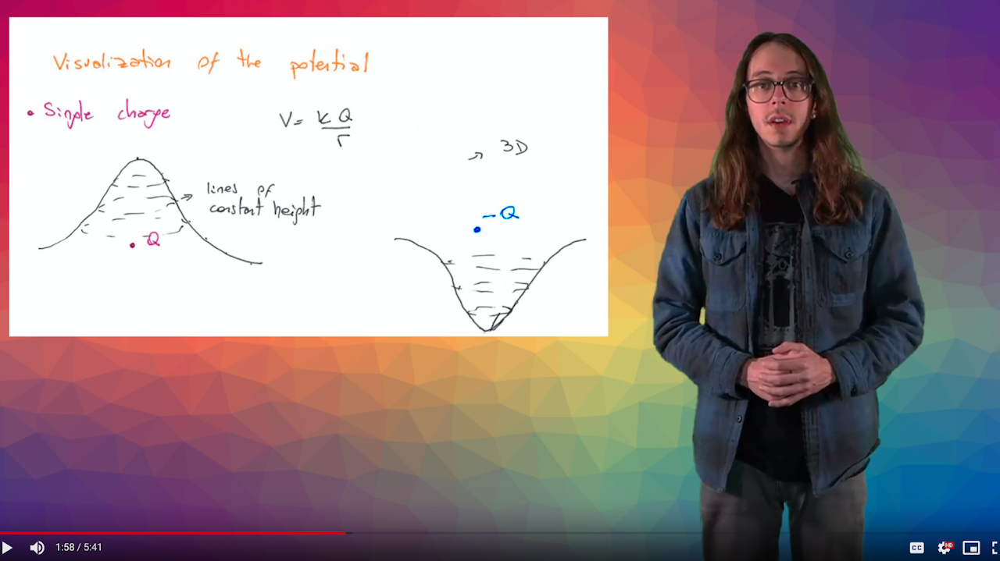

I have TA'd for 8 quarters, covering a wide variety of topics and level of rigor. Classes I have TA'd for include:

In addition to my standard TA-ing, I was funded by a grant from the Innovative Learning Technology Initiative (ILTI) to create videos for the Physics 40C course (introductory electricity and magnetism).
My approach to developing these videos has been to mimic popular educational videos on youtube. Many students are active on the internet and have encountered videos like this before, so creating a familiar style is key to engagement and retention of the material.
For the content, I work to break concepts down into their core principles before showing students simple examples. By building up complicated topics from simple ideas, students are able to learn at their own pace and don't feel overwhelmed by technical details.